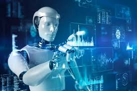

Robotics is a branch of science and engineering. It deals with the design, construction, and use of robots. A robot is a machine that can perform tasks automatically. Some robots work with human control. Others work completely on their own. Robotics combines mechanical engineering and electronics. It also uses computer science and artificial intelligence. The term robotics was first introduced by Isaac Asimov. He also created the famous Three Laws of Robotics. Robots are designed to make human work easier. They are widely used in modern industries. Industrial robots are used in factories. They help in assembling cars and machines. They work faster and more accurately than humans. This improves production efficiency. Medical robots are used in healthcare. They assist doctors during surgeries. They can perform very precise operations. This reduces the risk of human error. Robots are also used in space exploration. They explore planets and collect data. Rovers on Mars are examples of robots. They send information back to Earth. Military robots are used for safety purposes. They help in bomb detection and disposal. They reduce risk to human soldiers. In homes, robots are becoming more common. Robotic vacuum cleaners clean floors automatically. Smart assistants help in daily tasks. Agriculture also uses robotics technology. Robots help in planting and harvesting crops. They improve farming efficiency. Robots use sensors to understand their environment. Sensors help them detect objects and movement. Controllers process information and give instructions. Actuators help robots move and perform actions. Artificial intelligence makes robots smarter. It allows them to learn from experience. Machine learning improves robot performance over time. Robots can be classified into different types. Industrial robots work in factories. Service robots help humans in daily life. Medical robots work in hospitals. Humanoid robots look like humans. Robotics is growing very fast today. Many companies are investing in robotics technology. It is used in almost every industry. It increases speed and accuracy of work. Robots reduce human effort in dangerous jobs. They improve safety in risky environments. They can work without getting tired. They can operate 24 hours a day. However, robotics also has challenges. It can reduce some human jobs. It requires high cost and advanced technology. Despite challenges, robotics has many benefits. It improves productivity and efficiency. It helps in scientific research and innovation. It plays an important role in modern society. In the future, robots will become more advanced. They will be more intelligent and independent. They may work closely with humans. Robotics will continue to shape the future world.